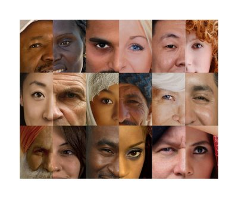

Allah created this world more than 10 million years ago and created people with different colors , types and nationalities
From the creature of the human being who tried , still trying and will always try till the judge day to build up the earth but of course he committed some mistakes during his 10 million year journey
Slavery has spread in the Earth in many different places in different years but it is thought that it was appeared first in 6800 B.C in Mesopotamia as they forced their defeated enemies to serve them and then slavery appeared in the ancient Egypt , in Asia , in the Americas , in Europe
is forbidden due to the laws which were put and the human rights which are applied in the whole world
The majority was agree with the slavery because it was good for their economy, but also there were people who were against
The Islamic prophet Muhammad encouraged manumission of slaves, even if one had to purchase them first
“ أَيُّمَا امْرِئٍ مُسْلِمٍ أَعْتَقَ امْرَأً مُسْلِمًا اسْتَنْقَذَ اللَّهُ بِكُلِّ عُضْوٍ مِنْهُ عُضْوًا مِنْهُ مِنَ النَّارِ .”
some developing countries rulers still thinks that they were chosen to master thier people by...